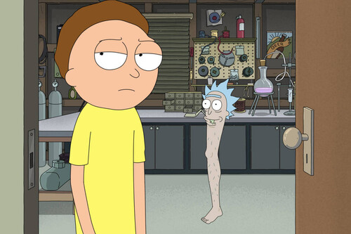

Galería de Imágenes
Una colección de momentos e ilustraciones del multiverso.
Temporada 3, Episodio 2: 'Rickmancing the Stone'
Temporada 1, Episodio 3: 'Anatomy Park'

Temporada 2, Episodio 7: 'Big Trouble in Little Sanchez'
Temporada 3, Episodio 10: 'The Rickchurian Mortydate'
Temporada 1, Episodio 10: 'Close Rick-counters of the Rick Kind'
Temporada 1, Episodio 4: 'M. Night Shaym-Aliens!'